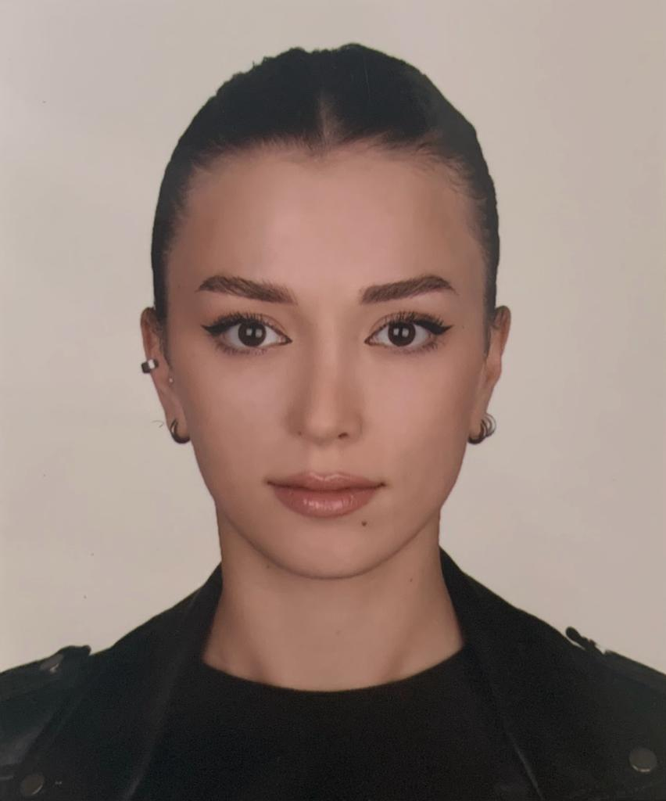

İrem Akdaş

Summary
I have high communication skills and ability to adapt to any situation. These qualities make my work easier. I am open to acquiring new skills so i have knowledge in various fields.
Education
- Bachelor Degree of Hydrogeological Engineering, Hacettepe University. (2017-2023)
Work Experience
- Directorate of Communications
September, 2021 - Present
- I do the registration and control of transportable materials.
- After the registration and control procedures, I organize and record the necessary data.
Skills
- MS Office Programs: + + +
- Organization Abilities: + + +
- Official Correspondence Informatiom: + + +
Other
Hobies
Contact Me